The Lucid Lake Institute is dedicated to the study of Western Esotericism and Quantum Philosophy.
M.A. in SociologyResearch field: History of Religion in Western Esotericism
Philosophical PioneerResearch field: Quantum Philosophy